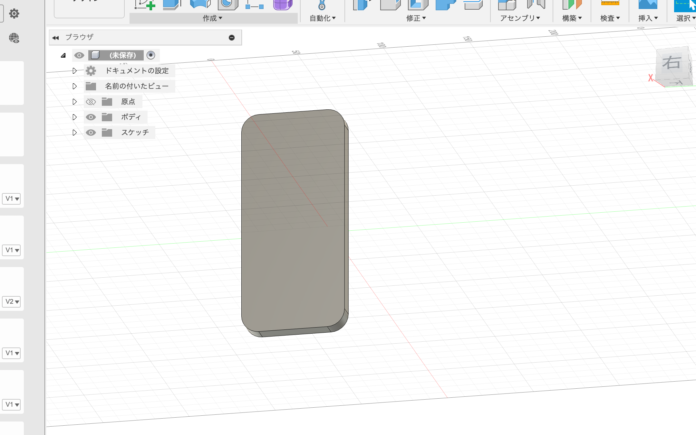

演習２
１１、１２回
ターポリンを使っったスマホケース
ターポリンでケースを作るにあたって、 手帳型のスマホケースを作ろうと考えています。
設計図
この設計図をもとに作っていく

写真にあるFUSIONの作成物を手帳の型紙のように使う
手帳を閉めた時には紐をボタンに巻きつけ固定するようにしようと考えている。
スマホケースには色をつけようと考えている。
試しにアクリル絵の具を使って塗ってみたのですが、ムラが多かったので失敗。次回はUVプリンターを使ってデザインを行いたいと思います。